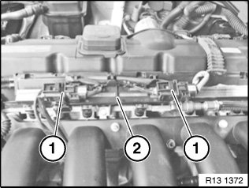
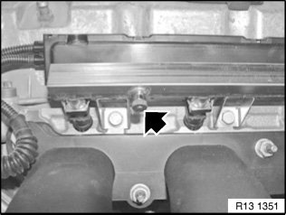
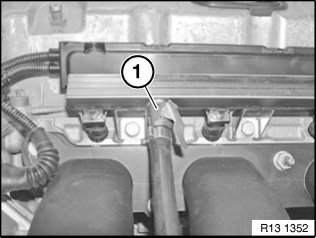
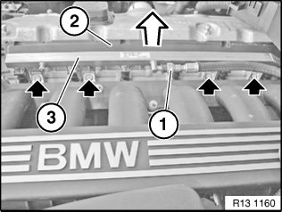
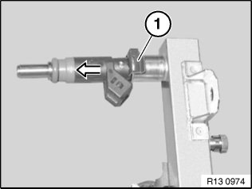

Fuel Rail: Service and Repair
13 53 240 Replacing Complete Fuel Rail (N51N52/ N52K)
Special tools required:

Necessary preliminary tasks:
- Read out fault memory of DME control unit
- Turn off ignition
- Remove ignition coil cover

Recycling
Fuel escapes when fuel line is detached. Catch and dispose of escaping fuel.
Observe country-specific waste disposal regulations.

N52K only:
Unclip plug connection (1) from holder (2) and disconnect.
Unclip wiring harnesses from holder (2) and connector strip (3).
Disconnect holder (2) from fuel rail.

Remove protective cap from compressed air valve.

Connect compressed air line (1) to compressed air valve.
Blow fuel back into tank with a short blast of compressed air (max. 3 bar).

Unlock and detach fuel line (1).
Close off fuel line (1) with special tool 13 5 161.
Detach connector strip (2) in direction of arrow.
Release screws.
Tightening torque 13 53 1AZ.
Remove fuel rail (3).

Lever out retainers (1).
Pull fuel injectors out of fuel rail.
Installation:
Replace sealing rings on fuel injectors and coat with anti-friction rubber coating.

NOTE:
Check stored fault message.
Clear fault memory.